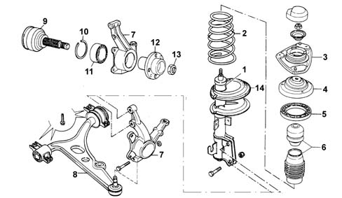

Introduction - FRONT SUSPENSION
- Path
- Descriptions > 44 SUSPENSION AND WHEELS > 4410 FRONT SUSPENSION > Introduction - FRONT SUSPENSION
- Kind
- system description
- Applies to
- all engines; all production periods
- Interactive page
- https://sloeber94.github.io/elrnDB-fMltpl/en/#/2892444
Applies to: all engines; all production periods
Indepedent suspension, McPherson type with forged steel track control arms anchored to an auxiliary crossmember giving optimum comfort and safe driving.
The main elements of the front suspension are:
- coil springs greatly offset in relation to the shock absorber axis to reduce sliding friction. The springs rest on shims with rubber seals for preventing operating noise
- double acting hydraulic shock absorbers
- "cellasto" end of travel buffer with gradual intervention to improve comfort and gradual nature of response round bends
- cast iron track control arms hinged to the front crossmember by means of two flexible bushes (the rear one has hydraulic suspension)
- anti-roll bar connected to the shock absorber telescopic damper to increase sensitivity to vertical jolts from the suspension.

1, Shock absorber 2, Coil spring 3, Upper shock absorber shim 4, Spacer 5, Rubber spring upper support seal 6, Dust cover and end of travel buffer 7, Steering knuckle 8, ack control arm 9, Constant velocity joint with stub axle 10, Bearing circlip 11, Ball bearing 12, Wheel hub 13, Wheel hub fixing nut 14, Rubber spring lower support seal